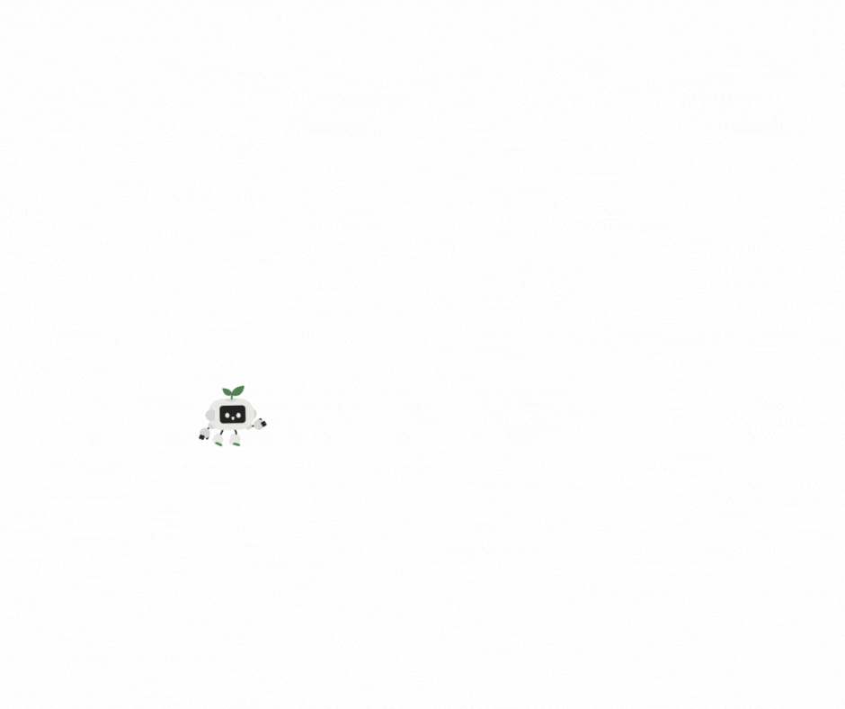

Pętle for i while – iteracje, przerwania (break, continue). Jak sobie poradzić z powtarzalną pracą?
Wymagana wiedza
- Podstawy składni języka Python: instrukcje wejścia/wyjścia (input(), print()) oraz zmienne.
- Umiejętność stosowania instrukcji warunkowych (if, elif, else) oraz operatorów logicznych (and, or).
- Rozumienie pojęcia algorytmu jako listy kroków prowadzącej do rozwiązania problemu.
Treści z podstawy programowej
| Dział | Sekcja |
|---|---|
| I. Rozumienie, analizowanie i rozwiązywanie problemów. Uczeń: | |
| 1) Formułuje problem w postaci specyfikacji (czyli opisuje dane i wyniki) i wyróżnia kroki w algorytmicznym rozwiązywaniu problemów. | |
| II. Programowanie i rozwiązywanie problemów z wykorzystaniem komputera i innych urządzeń cyfrowych. Uczeń: | |
| 1) W programach stosuje: instrukcje wejścia/wyjścia, wyrażenia arytmetyczne i logiczne, instrukcje warunkowe, instrukcje iteracyjne, funkcje oraz zmienne i tablice. |
Wstęp teoretyczny (przewidziany na około 20 minut)
Programowanie pozwala nam przejść z roli konsumenta do roli twórcy, a jedną z najpotężniejszych umiejętności twórcy jest automatyzacja. Komputery są niezwykle szybkie w wykonywaniu powtarzalnych instrukcji, które dla ludzi byłyby nużące. Służą do tego pętle (instrukcje iteracyjne).
Sterowanie robotem - wersja trudniejsza (10 minut)
Wyobraź sobie, że masz robota, który rozumie tylko bardzo proste polecenia: "narysuj odcinek o długości X cm", "obróć się o X stopni w lewo/prawo" oraz "powtórz X razy".
Na przykład, dla komend:
Powtórz 2 razy:
narysuj odcinek o długości 5 cm,
obróć się o 90 stopni w lewo,
narysuj odcinek o długości 3 cm,
obróć się o 90 stopni w prawo
Robot narysuje schodki:

Napisz na kartce instrukcję, jak narysować kwadrat, używając tylko trzech komend, które zna robot.
Jest to prostsze, niż poprzednim razem.
Wniosek: Pętla „powtórz” (w Pythonie for lub while) pozwala nam uniknąć nużącego przepisywania tych samych komend wiele razy.
Sterowanie robotem i warunki zatrzymania (5 minut)
Jedno dziecko staje się robotem, a pozostali wydają mu polecenia sterujące:
- Polecenie: „Dopóki (while) nie dotkniesz ściany, idź naprzód o jeden krok”.
- Polecenie z break: „Jeśli usłyszysz klaśnięcie, natychmiast przestań (break)”.
Analogia sportowa
Analogię pętli można porównać do treningu sportowego – zamiast mówić zawodnikowi sto razy „zrób pompkę”, trener wydaje jedno polecenie: „zrób serię 100 pompek” (for) lub „rób pompki, aż powiem stop” (while).
Składnia w języku Python
Zapisanie while w Python jest podobne do warunku if:
while warunek:
# wykonuj
Pętla for jest bardziej skomplikowana:
for i in range(0, 5):
print(i)
Żeby przerwać wykonanie pętli, stosujemy break.
while warunek:
print("OK!")
break
- Pętla for: Używamy jej, gdy wiemy dokładnie, ile razy coś ma się powtórzyć lub chcemy przejść przez jakiś zbiór elementów (np. listę liczb).
- Przykład: for i in range(5): wykona kod 5 razy.
- Pętla while: Działa tak długo, jak długo spełniony jest określony warunek logiczny.
- Przykład: „Dopóki herbata jest gorąca, czekaj”.
- Instrukcje przerwania:
- break: Natychmiastowe wyjście z pętli (np. gdy znajdziemy szukany element).
Wspólne eksperymenty z językiem Python (20 minut)
Przetestujmy zachowanie pętli w środowisku programistycznym. Przeanalizuj poniższe kody, a następnie je uruchom.
wiek = 5
while x >= 18:
print("Pełnoletni!")
wiek = 20
while x >= 18:
print("Pełnoletni!")
Co się dzieje, gdy warunek zawsze jest prawdziwy?
x = 5
while x >= 18:
print("Pełnoletni!")
Za pomocą pętli while, możemy zasymulować odliczanie do nowego roku:
ile_sekund_zostalo = 10
while ile_sekund_zostalo > 0:
print(ile_sekund_zostalo)
ile_sekund_zostalo = ile_sekund_zostalo - 1
print("Wszystkiego dobrego w nowym roku!")
Możemy wykorzystać pętle do wczytania danych wielokrotnie
while True:
liczba = int(input())
if liczba == 7:
print("Wczytana szczęśliwa siódemka, przerywam wykonanie pętli!")
break
print("Wczytana liczba to", liczba)
Zadania do rozwiązania na komputerze (przewidziane na około 50 minut)
Podczas pracy nad poniższymi problemami skup się na poprawnym zastosowaniu instrukcji iteracyjnych (for, while) oraz wyrażeń arytmetycznych i logicznych.
Pamiętaj, że każdy algorytm iteracyjny wymaga jasnej specyfikacji, czyli określenia, jakie masz dane wejściowe i jaki wynik chcesz osiągnąć. Jeśli Twój program wpada w „pętlę nieskończoną” (nie przestaje wypisywać liczb), możesz go przerwać w większości środowisk skrótem Ctrl+C.
- Licznik: Wypisz liczby od 1 do 30. Wykorzystaj do tego pętlę for oraz funkcję range(), pamiętając, że jej prawy zakres jest otwarty.
- ASCII-Art: Narysuj z gwiazdek (*) kwadrat o boku 5 oraz/lub prostą choinkę. To zadanie uczy, jak za pomocą pętli tworzyć powtarzalne wzory graficzne.
- Parzystość: Wypisz liczby od 1 do 30, które są parzyste. Wykorzystaj instrukcję if z operatorem modulo (% 2 == 0) wewnątrz pętli.
- Zakres użytkownika: Wczytaj dwie liczby A i B. Wypisz wszystkie liczby od A do B. Pamiętaj o obsłużeniu sytuacji, w której A jest większe od B.
- Złożona podzielność: Wypisz liczby od 1 do 100, które są podzielne przez 2 lub 3, ale jednocześnie niepodzielne przez 6. To świetne ćwiczenie na łączenie operatorów and, or oraz not.
- Potęgi trójki: Wypisz kolejne potęgi liczby 3, które są mniejsze od 1000. Użyj pętli while, która będzie sprawdzać warunek wielkości wyniku przed każdym powtórzeniem.
- Licznik potęg: Policz i wypisz, ile jest potęg dwójki mniejszych od 10000. W tym zadaniu musisz stworzyć zmienną pełniącą rolę licznika, którą zwiększysz o 1 przy każdej iteracji.
- Silnia (n!): Wczytaj liczbę n, a następnie oblicz silnię według wzoru: n!=1⋅2⋅⋯⋅n. Pamiętaj, aby zmienna przechowująca wynik (akumulator) miała na początku wartość 1, a nie 0.
- Suma przedziału: Wczytaj liczby A i B. Oblicz i wypisz sumę wszystkich liczb znajdujących się w przedziale od A do B
Zadania do rozwiązania na platformie Szkopuł
Śmiech informatyka i matematyka
Koszykarz
Kwadrat
Wskazówka
W Pythonie możesz wypisać wiele razy ten sam znak, korzystając z mnożenia: '#'*5